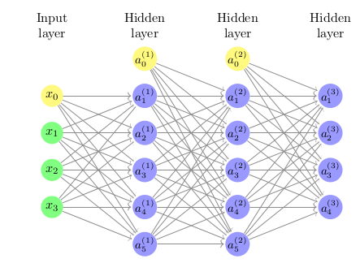
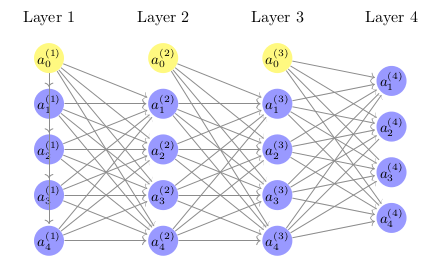
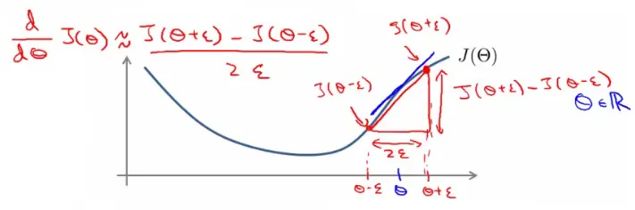

Neural networks, a core algorithm in machine learning, draw inspiration from the human brain's structure and function. They consist of layers containing interconnected nodes (neurons), each designed to perform specific computational tasks. Neural networks can tackle various classification problems, such as binary and multi-class classifications. The efficacy of these networks is enhanced through the adjustment of their parameters, guided by a cost function that quantifies the deviation between predictions and actual values.

In the illustrated network:
In binary classification, the neural network predicts a single output which can take one of two possible values (often represented as 0 or 1). Characteristics of binary classification in neural networks include:
Multi-class classification extends the network's capability to differentiate between multiple classes. Here, the target output $y$ is a vector representing the probability of each class. Characteristics include:
The learning process in neural networks involves:
The cost function for neural networks is an extension of the logistic regression cost function, adapted for multiple outputs. This function evaluates the performance of a neural network by measuring the difference between the predicted outputs and the actual values across all output units.
The cost function for a neural network with multiple outputs (where $K$ is the number of output units) is defined as:
$$J(\Theta) = -\frac{1}{m} \sum_{i=1}^{m} \sum_{k=1}^{K}[ y_k^{(i)} \log{(h_{\Theta}(x^{(i)}))}_k + (1- y_k^{(i)}) \log(1 - {(h_{\Theta} (x^{(i)}))}_k)] + \frac{\lambda}{2m} \sum_{l=1}^{L-1} \sum_{i=1}^{s_l} \sum_{j=1}^{s_{l+1}} (\Theta^{(l)}_{ji})^2$$
This function incorporates a sum over the $K$ output units for each training example, and also includes a regularization term to penalize large weights and prevent overfitting.
In order to optimize the cost function, we need to understand how changes in the weights $\Theta$ affect the cost. This is where the partial derivative terms come into play.
Gradient computation in neural networks is achieved through a process known as backpropagation, which calculates the gradient of the cost function with respect to each weight in the network.
Consider a neural network with one training example $(x,y)$:

Each layer's output ($a^{(l)}$) becomes the input for the next layer, with the activation function $g$ (typically a sigmoid or ReLU function) applied to the weighted sums. The final output $a^{(4)}$ is the hypothesis of the network for the given input $x$. The backpropagation algorithm then computes the gradient by propagating the error backwards from the output layer to the input layer, adjusting the weights $\Theta$ to minimize the cost function $J(\Theta)$.
Backpropagation is a key algorithm in training neural networks, used for calculating the gradient of the cost function with respect to each parameter in the network. It involves propagating errors backward through the network, from the output layer to the input layer.
$$\delta^{(L)}_j = a^{(L)}_j - y_j$$
$$\delta^{(l)}_j = (\Theta^{(l)}_j)^T \delta^{(l+1)} \cdot g'(z^{(l)}_j)$$
$$\Delta^{(l)}_{ij} = \Delta^{(l)}_{ij} + a^{(l)}_j \delta^{(l+1)}_i$$
The gradient of the cost function $J(\Theta)$ with respect to the weights is given by:
$$ \frac{\partial}{\partial \Theta^{(l)}_{ij}}J(\Theta) = \begin{cases} \frac{1}{m} \Delta^{(l)}_{ij} + \lambda \Theta ^{(l)}_{ij} \quad &\text{if} \, j \neq 0 \\ \frac{1}{m} \Delta^{(l)}_{ij} \quad &\text{if} \, j=0 \\ \end{cases} $$
Here's a Python implementation of the backpropagation algorithm using mock data. We will use NumPy to handle matrix operations and simulate the forward and backward passes through a neural network.
import numpy as np
# Mock data and network parameters
np.random.seed(42)
input_size = 3 # Number of input features
hidden_size = 5 # Number of hidden units
output_size = 2 # Number of output units
m = 10 # Number of training examples
lambda_reg = 0.01 # Regularization parameter
# Generate some random mock data
X = np.random.rand(m, input_size)
y = np.random.rand(m, output_size)
# Initialize weights randomly
Theta1 = np.random.rand(hidden_size, input_size + 1)
Theta2 = np.random.rand(output_size, hidden_size + 1)
# Sigmoid activation function
def sigmoid(z):
return 1 / (1 + np.exp(-z))
# Derivative of sigmoid
def sigmoid_gradient(z):
return sigmoid(z) * (1 - sigmoid(z))
# Add bias unit to input layer
X_bias = np.c_[np.ones((m, 1)), X]
# Forward pass
z2 = X_bias.dot(Theta1.T)
a2 = sigmoid(z2)
a2_bias = np.c_[np.ones((a2.shape[0], 1)), a2]
z3 = a2_bias.dot(Theta2.T)
a3 = sigmoid(z3)
# Calculate error terms (deltas)
delta3 = a3 - y
delta2 = delta3.dot(Theta2[:, 1:]) * sigmoid_gradient(z2)
# Accumulate gradients
Delta1 = np.zeros(Theta1.shape)
Delta2 = np.zeros(Theta2.shape)
for i in range(m):
Delta1 += np.outer(delta2[i], X_bias[i])
Delta2 += np.outer(delta3[i], a2_bias[i])
# Calculate the gradient
Theta1_grad = (1/m) * Delta1
Theta2_grad = (1/m) * Delta2
# Add regularization term
Theta1_grad[:, 1:] += (lambda_reg / m) * Theta1[:, 1:]
Theta2_grad[:, 1:] += (lambda_reg / m) * Theta2[:, 1:]
print("Gradient for Theta1:", Theta1_grad)
print("Gradient for Theta2:", Theta2_grad)Here is the expected output for the code provided above:
Gradient for Theta1: [[0.16460127 0.09018903 0.10866451 0.07285257]
[0.17977638 0.10320301 0.11857247 0.07947471]
[0.11092262 0.06493514 0.07037884 0.04835915]
[0.13438568 0.07016218 0.08659204 0.05121289]
[0.17372409 0.08792393 0.11033074 0.06408053]]
Gradient for Theta2: [[0.36423865 0.2588335 0.27099399 0.2588335 0.27099399 0.21043443]
[0.33764582 0.23963147 0.24547491 0.23963147 0.24547491 0.19303788]]Due to the complexity of backpropagation, implementing it correctly is crucial. Gradient checking is a technique to validate the correctness of the computed gradients.
Steps in Gradient Checking:

Gradient checking serves as a diagnostic tool to ensure that the backpropagation implementation is correct. However, it's computationally expensive and typically used only for debugging and not during regular training.
These notes are based on the free video lectures offered by Stanford University, led by Professor Andrew Ng. These lectures are part of the renowned Machine Learning course available on Coursera. For more information and to access the full course, visit the Coursera course page.